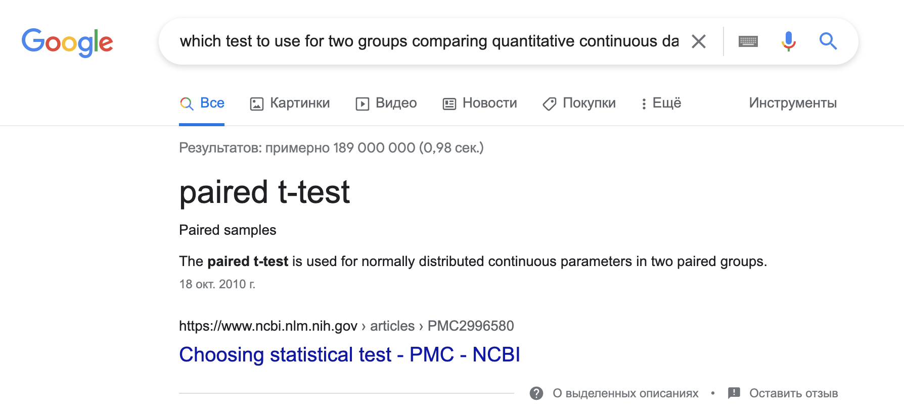
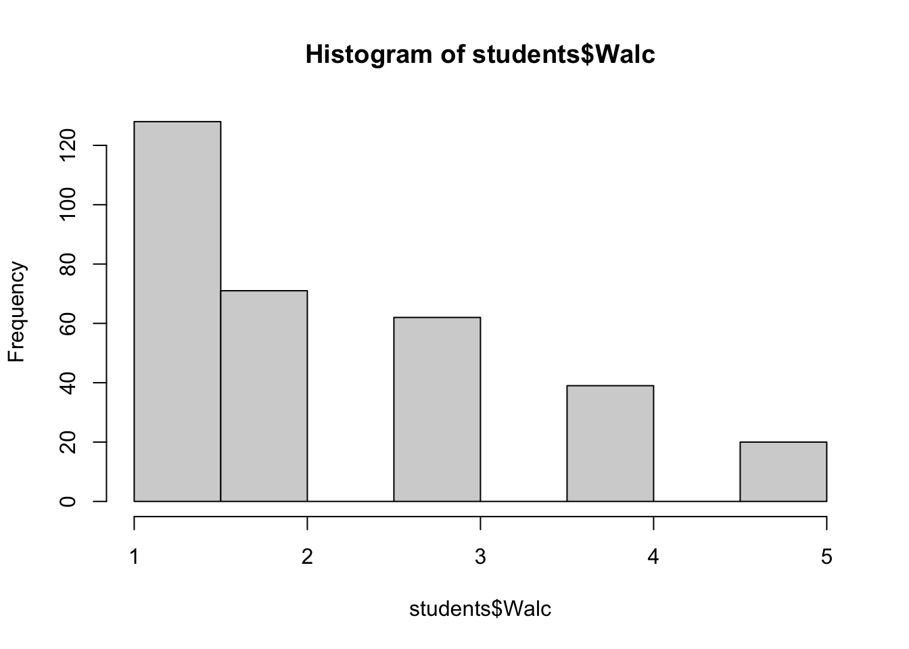
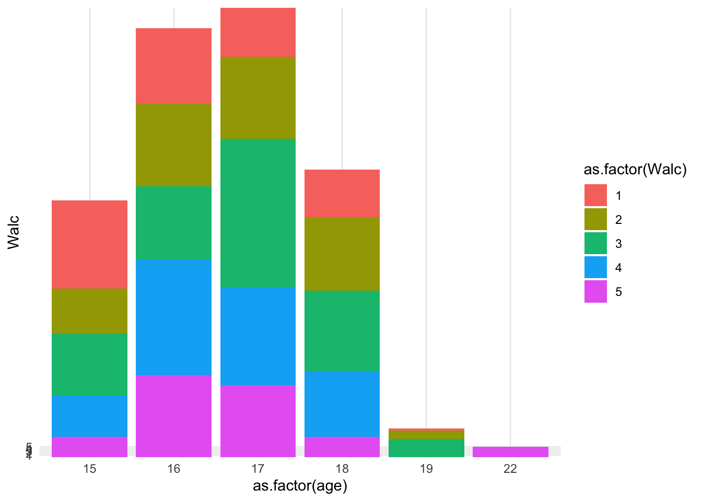
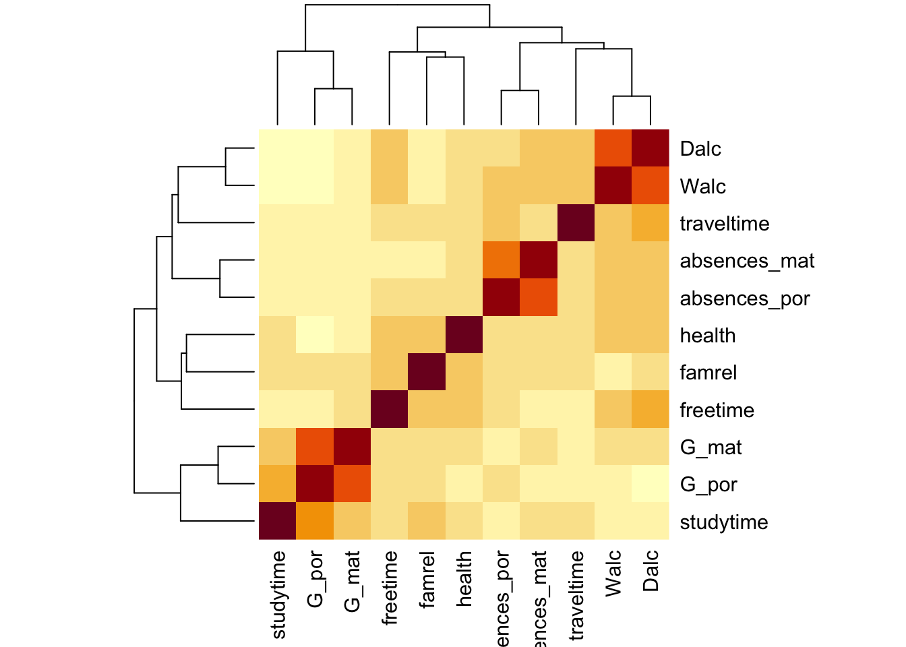

Прикладной анализ данных
2022-05-19
1 Чек-лист работы с данными
Рассмотрим, как должен выглядеть чек-лист работы с данными для проверки себя, если бы эти экспериментальные данные мы собирали бы сами?
—–Теоретический этап, планирование работы с данными—–
- Сформулированы теоретические гипотезы.
- Сформулированы экспериментальные гипотезы.
- Есть понимание, как будут выглядеть собранные данные.
- Исходя из гипотезы и того, как будут собраны и какие это данные, выбран статистический метод проверки экспериментальной гипотезы (и хорошо, если есть понимание о статистической гипотезе – это уже про H0 и H1)
- Выбрана среда для анализа данных и конкретная функция под выбранный статистический критерий (или несколько функций) (если нужно - установлен пакет для выбранных функций).
—–Данные собраны—–
- Собранные данные предобработаны и приведены в вид, к которому можно применить выбранный статистический критерий и выполнить выбранную функцию.
- Выбранные для анализа предобработанные переменные исследованы описательными статистиками и предварительно визуализированы для общего понимания).
- Проведен расчет выбранного статистического критерия с помощью выбранной функции.
- Вид полученных результатов понятен для интерпретации, и результаты согласуются с представлением о том, как они должны выглядеть.
- Результаты проинтепретированы и сделан вывод относительно статистической и экспериментальной гипотез.
- Результаты визуализированы, так, чтобы их было легче правильно воспринять.
Теперь пройдемся подробнее по некоторым из этих пунктов.
В качестве примера возьмем датасет с kaggle https://www.kaggle.com/datasets/uciml/student-alcohol-consumption. Это – данные из двух португальских школ (скорее колледжей) с подробной социо-демографической информации о студентах, включая ту, как они учатся по математике и португальскому языку и как часто пьют алкоголь. Этот датасет я взяла, так как он содержит переменные разного типа данных в разных шкалах (и шкала отношений, например, возраст, и порядковая шкала, например, рейтинггования образования мамы или папы или поддержка в семье).
##
## ── Column specification ────────────────────────────────────────────────────────
## cols(
## .default = col_character(),
## age = col_double(),
## Medu = col_double(),
## Fedu = col_double(),
## traveltime = col_double(),
## studytime = col_double(),
## failures = col_double(),
## famrel = col_double(),
## freetime = col_double(),
## goout = col_double(),
## Dalc = col_double(),
## Walc = col_double(),
## health = col_double(),
## absences = col_double(),
## G1 = col_double(),
## G2 = col_double(),
## G3 = col_double()
## )
## ℹ Use `spec()` for the full column specifications.studens_mat %>%
rename_with(., ~ paste0(., "_mat"), .cols = c(absences, paid, G1, G2, G3)) -> studens_mat #переименовываю колонки для упрощения понимания, какие относятся к математикие
kable(studens_mat[1:10,]) %>% scroll_box(width = "100%") #визуализирую табличку для этой книжки| school | sex | age | address | famsize | Pstatus | Medu | Fedu | Mjob | Fjob | reason | guardian | traveltime | studytime | failures | schoolsup | famsup | paid_mat | activities | nursery | higher | internet | romantic | famrel | freetime | goout | Dalc | Walc | health | absences_mat | G1_mat | G2_mat | G3_mat |
|---|---|---|---|---|---|---|---|---|---|---|---|---|---|---|---|---|---|---|---|---|---|---|---|---|---|---|---|---|---|---|---|---|
| GP | F | 18 | U | GT3 | A | 4 | 4 | at_home | teacher | course | mother | 2 | 2 | 0 | yes | no | no | no | yes | yes | no | no | 4 | 3 | 4 | 1 | 1 | 3 | 6 | 5 | 6 | 6 |
| GP | F | 17 | U | GT3 | T | 1 | 1 | at_home | other | course | father | 1 | 2 | 0 | no | yes | no | no | no | yes | yes | no | 5 | 3 | 3 | 1 | 1 | 3 | 4 | 5 | 5 | 6 |
| GP | F | 15 | U | LE3 | T | 1 | 1 | at_home | other | other | mother | 1 | 2 | 3 | yes | no | yes | no | yes | yes | yes | no | 4 | 3 | 2 | 2 | 3 | 3 | 10 | 7 | 8 | 10 |
| GP | F | 15 | U | GT3 | T | 4 | 2 | health | services | home | mother | 1 | 3 | 0 | no | yes | yes | yes | yes | yes | yes | yes | 3 | 2 | 2 | 1 | 1 | 5 | 2 | 15 | 14 | 15 |
| GP | F | 16 | U | GT3 | T | 3 | 3 | other | other | home | father | 1 | 2 | 0 | no | yes | yes | no | yes | yes | no | no | 4 | 3 | 2 | 1 | 2 | 5 | 4 | 6 | 10 | 10 |
| GP | M | 16 | U | LE3 | T | 4 | 3 | services | other | reputation | mother | 1 | 2 | 0 | no | yes | yes | yes | yes | yes | yes | no | 5 | 4 | 2 | 1 | 2 | 5 | 10 | 15 | 15 | 15 |
| GP | M | 16 | U | LE3 | T | 2 | 2 | other | other | home | mother | 1 | 2 | 0 | no | no | no | no | yes | yes | yes | no | 4 | 4 | 4 | 1 | 1 | 3 | 0 | 12 | 12 | 11 |
| GP | F | 17 | U | GT3 | A | 4 | 4 | other | teacher | home | mother | 2 | 2 | 0 | yes | yes | no | no | yes | yes | no | no | 4 | 1 | 4 | 1 | 1 | 1 | 6 | 6 | 5 | 6 |
| GP | M | 15 | U | LE3 | A | 3 | 2 | services | other | home | mother | 1 | 2 | 0 | no | yes | yes | no | yes | yes | yes | no | 4 | 2 | 2 | 1 | 1 | 1 | 0 | 16 | 18 | 19 |
| GP | M | 15 | U | GT3 | T | 3 | 4 | other | other | home | mother | 1 | 2 | 0 | no | yes | yes | yes | yes | yes | yes | no | 5 | 5 | 1 | 1 | 1 | 5 | 0 | 14 | 15 | 15 |
##
## ── Column specification ────────────────────────────────────────────────────────
## cols(
## .default = col_character(),
## age = col_double(),
## Medu = col_double(),
## Fedu = col_double(),
## traveltime = col_double(),
## studytime = col_double(),
## failures = col_double(),
## famrel = col_double(),
## freetime = col_double(),
## goout = col_double(),
## Dalc = col_double(),
## Walc = col_double(),
## health = col_double(),
## absences = col_double(),
## G1 = col_double(),
## G2 = col_double(),
## G3 = col_double()
## )
## ℹ Use `spec()` for the full column specifications.studens_por %>%
rename_with(., ~ paste0(., "_por"), .cols = c(absences, paid, G1, G2, G3)) -> studens_por
kable(studens_por[1:10,]) %>% scroll_box(width = "100%") #визуализирую табличку для этой книжки| school | sex | age | address | famsize | Pstatus | Medu | Fedu | Mjob | Fjob | reason | guardian | traveltime | studytime | failures | schoolsup | famsup | paid_por | activities | nursery | higher | internet | romantic | famrel | freetime | goout | Dalc | Walc | health | absences_por | G1_por | G2_por | G3_por |
|---|---|---|---|---|---|---|---|---|---|---|---|---|---|---|---|---|---|---|---|---|---|---|---|---|---|---|---|---|---|---|---|---|
| GP | F | 18 | U | GT3 | A | 4 | 4 | at_home | teacher | course | mother | 2 | 2 | 0 | yes | no | no | no | yes | yes | no | no | 4 | 3 | 4 | 1 | 1 | 3 | 4 | 0 | 11 | 11 |
| GP | F | 17 | U | GT3 | T | 1 | 1 | at_home | other | course | father | 1 | 2 | 0 | no | yes | no | no | no | yes | yes | no | 5 | 3 | 3 | 1 | 1 | 3 | 2 | 9 | 11 | 11 |
| GP | F | 15 | U | LE3 | T | 1 | 1 | at_home | other | other | mother | 1 | 2 | 0 | yes | no | no | no | yes | yes | yes | no | 4 | 3 | 2 | 2 | 3 | 3 | 6 | 12 | 13 | 12 |
| GP | F | 15 | U | GT3 | T | 4 | 2 | health | services | home | mother | 1 | 3 | 0 | no | yes | no | yes | yes | yes | yes | yes | 3 | 2 | 2 | 1 | 1 | 5 | 0 | 14 | 14 | 14 |
| GP | F | 16 | U | GT3 | T | 3 | 3 | other | other | home | father | 1 | 2 | 0 | no | yes | no | no | yes | yes | no | no | 4 | 3 | 2 | 1 | 2 | 5 | 0 | 11 | 13 | 13 |
| GP | M | 16 | U | LE3 | T | 4 | 3 | services | other | reputation | mother | 1 | 2 | 0 | no | yes | no | yes | yes | yes | yes | no | 5 | 4 | 2 | 1 | 2 | 5 | 6 | 12 | 12 | 13 |
| GP | M | 16 | U | LE3 | T | 2 | 2 | other | other | home | mother | 1 | 2 | 0 | no | no | no | no | yes | yes | yes | no | 4 | 4 | 4 | 1 | 1 | 3 | 0 | 13 | 12 | 13 |
| GP | F | 17 | U | GT3 | A | 4 | 4 | other | teacher | home | mother | 2 | 2 | 0 | yes | yes | no | no | yes | yes | no | no | 4 | 1 | 4 | 1 | 1 | 1 | 2 | 10 | 13 | 13 |
| GP | M | 15 | U | LE3 | A | 3 | 2 | services | other | home | mother | 1 | 2 | 0 | no | yes | no | no | yes | yes | yes | no | 4 | 2 | 2 | 1 | 1 | 1 | 0 | 15 | 16 | 17 |
| GP | M | 15 | U | GT3 | T | 3 | 4 | other | other | home | mother | 1 | 2 | 0 | no | yes | no | yes | yes | yes | yes | no | 5 | 5 | 1 | 1 | 1 | 5 | 0 | 12 | 12 | 13 |
1.1 Сформулированы теоретические гипотезы
<Здесь на парах мы придумывали гипотезы>
Возьмем первую придуманную гипотезу: в датасете есть студенты возрастов от 15 до 22 двух лет. Возможно, те, кто младше, будут бояться признаться в употрблении алкоголя и отвечать так, будто не употрябляют его. Они вляются несовершеннолетними и могут бояться, что родители узнают.
Эта гипотеза хороша тем, что она имеет понятное теоретическое обоснование, она проверяема на наших данных, и данные подходят для того, чтобы ее проверить
Вторая гипотеза: студенты с менее поддерживающими отношениями в семье чаще употребляют алкоголь. Эта гипотеза так же понятна, имеет теоретическое обосноование, проверяема в исследовании, и наши данные подходят для ее проверки.
У меня была еще одна, третья гипотеза: что студенты, пропускающие много занятий, буду иметь более низкий средний балл по математике и португальскому.
1.2 Сформулированы экспериментальные гипотезы
Гипотеза 1 в контексте нашего исследования и существующих переменных звучит так: студенты возраста 15-17 лет (переменная age) при ответе на вопрос об употреблении алкоголя в выходные дни (переменная Walc) будут выбирать варианты ответов, ассоциированные с как можно более редким употреблением - 1 или 2
Гипотеза 2 Студенты, кто оценивает отношения с родителями как менее поддерживающие (переменная famrel, менее поддерживающие в значениях 1-2), чаще употребляют алкоголь (переменная Walc, возьмем тоже выходные дни, значения 4-5)
Гипотеза 3 Студенты, у кого было много пропусков (переменная absences_mat или absences_por, высокие значения), будут иметь более низкий средний балл (среднее из переменных G1_mat, G2_mat, G3_mat или G1_por, G2_por, G3_por -- низкие значения)
Давайте сначала подумаем, что это за гипотезы, какие зависимые и независимые переменные, наличие или отсутствие какой связи между зависимой и независимыми переменными нам хочется проверить?
1.2.1 Зависимые (ЗП) и независимые (НП) переменные в гипотезе
Рассмотрим гипотезу 1. Что в ней является зависимой и независимой переменной?
Сейчас гипотеза сформулирована так, что НП – это возраст (age), а ЗП – это количество употребления алкоголя Walc. Согласны ли вы с таким разделением? Почему? Иногда бывает сложно определить, что будет являться зависимой и независимыми переменными. Независимые переменные – это все, чем мы манипулируем по ходу проведения исследования, с целью получить разный результат. Зависимая – целевая переменная, то, что мы измереяем, изменения в чем мы ожидаем получить после манипуляции независимыми переменными. При описании исследования всегда важно записывать ЗП и НП, наряду с экспериментальной (эмпирической) гипотезой – сердце нашего исследования, самое основное из языка, на котором описывается исследование.
Следующий вопрос – к какой шкале относятся ЗП и НП? Это важно понимать, чтобы потом выбрать, как анализировать данные.
1.2.2 Типы шкал
| Шкала | Описание | Возможные операции | Примеры |
|---|---|---|---|
| Наименований (номинальная) | Качественная, нельзя установить “больше” или “меньше” | =, \(\neq\) | shcool, sex, address, famsize, Mjob, Fjob, schoolsup |
| Порядка (ранговая) | Качественная, можно установить “больше” или “меньше”, но нельзя посчитать количественно, на сколько больше или меньше | =, \(\neq\), >, < | Medu, Fedu, traveltime, studytime, famrel, freetime, goout, Dalc, Walc, health |
| Разности (интервальная) | Количественная, но нет абсоолютного нуля, можно посчитать на сколько больше или меньше, но нельзя посчитать, во сколько раз | =, \(\neq\), >, <, +, - | G (отнесу сюда, так как с оценками все сложно) |
| Отношений (абсолютная) | Количественная, есть абсолютный ноль, можно посчитать и на сколько больше или меньше, и во сколько раз | =, \(\neq\), >, <, +, -, ×, ÷ | age, failures, absences |
Опишем переменные для гипотезы 1. Возраст (age) – это количественная переменная, в целом про возраст мы можем сказать, что он непрерывен (здесь возраст округлен до целых, поэтому на которотком промежутке возрастов это может сыграть роль) Чуть позже посмотрим на переменную возраста в описательных статистиках, чтобы убедиться, что можем работать с ней как с непрерывной переменной. У возраста есть абсолютный ноль (нельзя быть возраста “-10 лет”), можем сказать, что человек возраста 30 лет в два раза старше человека возраста 15 лет, поэтому возраст относится к шкале отношений.
Walc – явно относится к порядковой шкале: можем сказать, что студенты, ответившие “4” на вопрос про употребление алкоголя, употребляют его больше, чем те, кто выбрал “2”, но не можем сказать, что в количестве выпитого алкоголя эта разница выражается как в два раза больше.
К каким шкалам относятся переменные для гипотезы 2 и гипотезы 3?
1.2.3 Связь между ЗП и НП: какая она?
Сейчас гипотеза 1 сформулирована так:
студенты возраста 15-17 лет (переменная age) при ответе на вопрос об употреблении алкоголя в выходные дни (переменная Walc) будут выбирать варианты ответов, ассоциированные с как можно более редким употреблением - 1 или 2
Мы выяснили, что НП – это возраст (age), а ЗП – это количество употребления алкоголя Walc. То есть, разворачивая такую формулировку, мы считаем, что возраст влияет на отеты. Можем ли мы проверить такую причинно-следственную связь в этих данных?
Два основных вида связи между переменными:
- Ассоциативная или корреляционная
- Причинно-следственная
Три необходимых условия для установления причинно-следственной связи: * * *
Получается, что установить причинно-следственную связь таким образом не получится, и мы можем говорить о корруляционной или ассоциативной связи. Кажется, отсюда следует, что мы можем говорить только о корреляции, однако, тут тоже есть варианты. Сравните гипотезы: чем меньше возраст студентов (age), чем ниже будут ответы в переменной Walc и студенты возраста 15, 16, 17 лет будут выбирать варианты ответа в переменной Walc 1 или 2. Чем они отличаются?
1.2.4 Уровни ЗП и НП
Следующий вопрос про НП и ЗП – это какие уровни есть в переменных? Обычно об уровнях переменных говорят, когда есть несколько условий внутри одной переменной, например, условия “часто” и “редко”, условия “обеспеченная семья” “не обеспеченная”. Вопрос уровней тесно связан с вопросом о связи между переменными и деталями гипотезы.
1.3 Есть понимание, как будут выглядеть собранные данные
Итак, мы подробно разобрались, какие у нас гипотезы. Теперь можно подумать о том, как будут выглядеть собранные данные для проверки этих гипотез.
Здесь мы работаем с уже готовым датасетом, поэтому понимание о собранных данных у нас есть. Но в реальной жизни прежде, чем начинать сбор данных, нужно хорошо представлять себе, как будут записываться данные: это логи в текстовом файле, и нам нужно будет вручную выковыривать цифры и собирать табличку? Если да, можно ли это автоматизировать? Или это эксель-табличка, в которую данные будут писаться в уже пригодном для работы виде? Если нет, можем ли мы сделать что, чтобы данные писались в такую удобную табличку еще на этапе кодирования эксперимента? Этот самый момент, когда мы уже определили гипотезы и отправляемся разрабатывать дизайн эксперимента и кодировать его в PsychoPy или другой среде. До кодирования нужно будет понимать, как мы будем собирать данные, как они будут выглядеть, сможем ли мы сделать с ними все, что хотим, применить нужный статистический метод?
1.4 Исходя из гипотезы и того, как будут собраны и какие это данные, выбран статистический метод проверки экспериментальной гипотезы
До кодирования эксперимента или в начале кодирования мы так же определеяем, каким статистическим критерием будем проверять наши гипотезу. Сейчас, в случае с уже готовым дататестом, все не совсем так, и мы на уже датасете пытаемся восстановить изначальные гипотезы, для проверки которых этот датасет собирался. Вообще пытаться прикрутить гипотезу к уже собранным данным – это плохая научная практика, которая приводит к большому числу ложноположительных результатов. Об этом мы тоже будем говорить на одном из семинаров.
Давайте вернемся к моменту формулировки гипотез, когда мы исследовали, какую связь между переменными хотим проверить.
Гипотезу 1 мы свели к варианту:
студенты возраста 15, 16, 17 лет будут чаще выбирать варианты ответа в переменной Walc 1 или 2, чем студенты старше 18 лет
Как можно ее проверить? Это звучит как тест-сравнение двух или нескольких средних по позрастам, 15-17 лет и 18-22.
Гипотеза 2 Студенты, кто оценивает отношения с родителями как менее поддерживающие (переменная famrel, менее поддерживающие в значениях 1-2), чаще употребляют алкоголь (переменная Walc, возьмем тоже выходные дни, значения 4-5)
Гипотеза 3 Студенты, у кого было много пропусков (переменная absences_mat или absences_por, высокие значения), будут иметь более низкий средний балл (среднее из переменных G1_mat, G2_mat, G3_mat или G1_por, G2_por, G3_por -- низкие значения)
Как понять, какой тест выбрать? Это, наверное, один из самых сложных вопросов в статистике.
Вопросы, которые влияют на принятие решения относительно статистического теста:
- Зависимая переменная количественная (интервальная и шкала отношений) или категориальная (номинативная и порядковая)? В какой шкале?
- Если ЗП количественная – непрерывная или дискретная?
- Сколько независимых переменных?
- Если ЗП количественная непрерывная – описывается параметрическим (чаще всего нормальным) распределением? (определяется чаще “на глаз” или QQ-графиками, тесты на нормальность почти всегда будут давать негативный результат из-за чувствительности)
- НП количественные (интервальная и шкала отношений) или категориальные (номинативная и порядковая)? В какой шкале?
- Если НП количественные – непрерывные или дискретные?
- Если сравниваем группы – данные в группах зависимы или нет? Если нет, как сильно отличаются данные в группах, можем ли сказать, что дисперсия примерно одинакова или нет?
Есть большое количество схем, но обычно они сильно перегруженны и сложны в использовании, больше путают, чем помогают. Здесь относительно (!) неплохая схема, но я сама не сразу в ней разобралась https://statsandr.com/blog/files/overview-statistical-tests-statsandr.pdf
Вот довольно приближенная к реальности схема из твитттера PhD_life https://twitter.com/phd_lifee/status/844837342288343041?lang=bg для выбора критерия, когда переменные количественные 
Охватить все возможные варианты бегло невозможно, поэтому давайте разберем несколько самых частых ситуаций.
- ЗП количественная, непрерывная, и одна НП, количественная, непрерывная – корреляция или линейная регрессия (linear regression).
- ЗП количественная, непрерывная, и две и более НП, количественные, непрерывные – множественная линейная регрессия (multiple linear regression).
- ЗП количественная, непрерывная, и параметрическая, и одна НП, категориальная, дискретная. Группы НЕзависимые – independent t-test.
- ЗП количественная, непрерывная, и параметрическая, и одна НП, категориальная, дискретная. Группы зависимые – paired t-test.
- ЗП порядковая или НЕпараметрическая, и одна НП, категориальная, дискретная. Группы НЕзависимые – Mann-Whitney test.
- ЗП порядковая или НЕпараметрическая, и одна НП, категориальная, дискретная. Группы зависимые – Wilcoxon test.
- ЗП количественная, непрерывная, и параметрическая, и две и более НП, категориальные, дискретные. Группы НЕзависимые – ANOVA.
- ЗП количественная, непрерывная, и параметрическая, и две и более НП, категориальные, дискретные. Группы зависимые – repeated-measurment ANOVA.
- ЗП порядковая или НЕпараметрическая, и две и более НП, категориальные, дискретные. Группы независимые – Kruskal-Wallis test.
- ЗП порядковая или НЕпараметрическая, и две и более НП, категориальные, дискретные. Группы зависимые – Friedman test.
- ЗП категориальная, может принимать два значения, и одна НП, количественная, непрерывная – логистическая регрессия (logistic regression)
- ЗП категориальная, может принимать два значения, и две и более НП, количественные, непрерывные – множественная логистическая регрессия (multiple logistic regression)
- ЗП категориальная, может принимать два значения, и одна НП, категориальная, дискретная. Группы НЕзависимые – Fisher’s test (Chi-square test).
- ЗП категориальная, может принимать два значения, и одна НП, категориальная, дискретная. Группы зависимые – McNemar’s test.
- ЗП категориальная, может принимать БОЛЕЕ двух значениq, и одна или более НП, количественных, непрерывных – мультиномиальная логистическая регрессия (Multinomial logistic regression, multivariate logistic regression)
В целом, если разобраться в тестах не получилось, ответы на эти вопросы помогают сформировать запрос и дальше отправиться в гугл или к коллегам с конкретным вопросом, например какой тест использовать для сравнения двух независимых групп в количественной шкале? Я подразумевала, что можно почитать статьи из поисковой выдачи, но оказалось, что гугл даже научился иногда отвечать на этот вопрос…

1.5 Выбрана среда для анализа данных и конкретная функция под выбранный статистический критерий (или несколько функций) (если нужно - установлен пакет для выбранных функций)
Как вы уже догадались, я обрабатываю данные в R. Этот сайт, кстати, тоже сделан на языке R в RStudio с помощью текстовой разметки RMarkdown. Об этом мы тоже немного поговорим на последнем семинаре, когда будем говорить про презентации результатов
1.6 Собранные данные предобработаны и приведены в вид, к которому можно применить выбранный статистический критерий и выполнить выбранную функцию
Ура, наконец-то мы на этапе, где уже собраны данные! Я немного предобработаю их, чтобы дальше было проще с ними работать. Не недооценивайте предобработку: опытные аналитики говорят, что примерно 80%-90% анализа данных составляет предобработка, и только оставшееся – собственно вычисление ключевой функции (статистического критерия) и получение целевой цифры.
studens_mat %>%
full_join(studens_por, by = c("school","sex","age","address","famsize","Pstatus","Medu","Fedu",
"Mjob","Fjob","reason", "guardian", "traveltime","studytime", "failures", "schoolsup", "famsup",
"activities", "nursery", "higher", "internet", "romantic", "famrel", "freetime", "goout",
"Dalc", "Walc", "health")) -> students #объединяю две таблички в однуstudents %>%
mutate("student" = paste0("id", row_number()), .before = "school") -> students #добавляю колонку с айдишником и перезаписываю результат в датасет
students %>%
drop_na() -> students #пропускаю строки с NA и перезаписываю результат в датасетstudents %>%
mutate(G_mat = rowMeans(select(., c(G1_mat, G2_mat, G3_mat))),
G_por = rowMeans(select(., c(G1_por, G2_por, G3_por)))) -> students
kable(students[1:10,]) %>% scroll_box(width = "100%") #здесь я посчитала средний балл по трем баллам по математике G_mat и португальскому G_por | student | school | sex | age | address | famsize | Pstatus | Medu | Fedu | Mjob | Fjob | reason | guardian | traveltime | studytime | failures | schoolsup | famsup | paid_mat | activities | nursery | higher | internet | romantic | famrel | freetime | goout | Dalc | Walc | health | absences_mat | G1_mat | G2_mat | G3_mat | paid_por | absences_por | G1_por | G2_por | G3_por | G_mat | G_por |
|---|---|---|---|---|---|---|---|---|---|---|---|---|---|---|---|---|---|---|---|---|---|---|---|---|---|---|---|---|---|---|---|---|---|---|---|---|---|---|---|---|
| id1 | GP | F | 18 | U | GT3 | A | 4 | 4 | at_home | teacher | course | mother | 2 | 2 | 0 | yes | no | no | no | yes | yes | no | no | 4 | 3 | 4 | 1 | 1 | 3 | 6 | 5 | 6 | 6 | no | 4 | 0 | 11 | 11 | 5.666667 | 7.333333 |
| id2 | GP | F | 17 | U | GT3 | T | 1 | 1 | at_home | other | course | father | 1 | 2 | 0 | no | yes | no | no | no | yes | yes | no | 5 | 3 | 3 | 1 | 1 | 3 | 4 | 5 | 5 | 6 | no | 2 | 9 | 11 | 11 | 5.333333 | 10.333333 |
| id4 | GP | F | 15 | U | GT3 | T | 4 | 2 | health | services | home | mother | 1 | 3 | 0 | no | yes | yes | yes | yes | yes | yes | yes | 3 | 2 | 2 | 1 | 1 | 5 | 2 | 15 | 14 | 15 | no | 0 | 14 | 14 | 14 | 14.666667 | 14.000000 |
| id5 | GP | F | 16 | U | GT3 | T | 3 | 3 | other | other | home | father | 1 | 2 | 0 | no | yes | yes | no | yes | yes | no | no | 4 | 3 | 2 | 1 | 2 | 5 | 4 | 6 | 10 | 10 | no | 0 | 11 | 13 | 13 | 8.666667 | 12.333333 |
| id6 | GP | M | 16 | U | LE3 | T | 4 | 3 | services | other | reputation | mother | 1 | 2 | 0 | no | yes | yes | yes | yes | yes | yes | no | 5 | 4 | 2 | 1 | 2 | 5 | 10 | 15 | 15 | 15 | no | 6 | 12 | 12 | 13 | 15.000000 | 12.333333 |
| id7 | GP | M | 16 | U | LE3 | T | 2 | 2 | other | other | home | mother | 1 | 2 | 0 | no | no | no | no | yes | yes | yes | no | 4 | 4 | 4 | 1 | 1 | 3 | 0 | 12 | 12 | 11 | no | 0 | 13 | 12 | 13 | 11.666667 | 12.666667 |
| id8 | GP | F | 17 | U | GT3 | A | 4 | 4 | other | teacher | home | mother | 2 | 2 | 0 | yes | yes | no | no | yes | yes | no | no | 4 | 1 | 4 | 1 | 1 | 1 | 6 | 6 | 5 | 6 | no | 2 | 10 | 13 | 13 | 5.666667 | 12.000000 |
| id9 | GP | M | 15 | U | LE3 | A | 3 | 2 | services | other | home | mother | 1 | 2 | 0 | no | yes | yes | no | yes | yes | yes | no | 4 | 2 | 2 | 1 | 1 | 1 | 0 | 16 | 18 | 19 | no | 0 | 15 | 16 | 17 | 17.666667 | 16.000000 |
| id10 | GP | M | 15 | U | GT3 | T | 3 | 4 | other | other | home | mother | 1 | 2 | 0 | no | yes | yes | yes | yes | yes | yes | no | 5 | 5 | 1 | 1 | 1 | 5 | 0 | 14 | 15 | 15 | no | 0 | 12 | 12 | 13 | 14.666667 | 12.333333 |
| id11 | GP | F | 15 | U | GT3 | T | 4 | 4 | teacher | health | reputation | mother | 1 | 2 | 0 | no | yes | yes | no | yes | yes | yes | no | 3 | 3 | 3 | 1 | 2 | 2 | 0 | 10 | 8 | 9 | no | 2 | 14 | 14 | 14 | 9.000000 | 14.000000 |
1.7 Выбранные для анализа предобработанные переменные исследованы описательными статистиками и предварительно визуализированы для общего понимания)
Теперь давайте поизучаем данные. Как ведут себя выбранные для анализа переменные? Что это за данные: в какой шкале они записаны, непрерывные или дискретные? Каковы максимальные и миниамальные значения? А самые встречающиеся? Какова вообще встречаемость разных значений?
Такое описание данных называется описательными статистиками (descipritve stats), потому что, как уже понятно из названия, описывает наши данные. Это идет в разрез со статистиками вывода (inferential stats), когда мы делаем выводы относительно гипотез – сравнение двух выборок с определением статистической значимости результатов, корреляционный тест, определение коэффциентов в линейной регрессии и так далее. Сейчас нас интересует исследование самих переменных, поэтому речь пойдет об описательные статистики подробнее.
1.7.1 Описательные статистики
Переменные, которые нас интересовали – для одной гипотезы это возраст (Age) и употребление алкоголя на выходных (Walc), для другой – отношения в семье (famrel) и употребление алкоголя в рабочие дни (Dalc). Рассмотрим их подробнее. И еще дл
## Min. 1st Qu. Median Mean 3rd Qu. Max.
## 15.00 16.00 16.00 16.52 17.00 22.00Более детальный способ – с помощью дополнительных пакетов, например, Skimr и функции skim
| Name | students$age |
| Number of rows | 320 |
| Number of columns | 1 |
| _______________________ | |
| Column type frequency: | |
| numeric | 1 |
| ________________________ | |
| Group variables | None |
Variable type: numeric
| skim_variable | n_missing | complete_rate | mean | sd | p0 | p25 | p50 | p75 | p100 | hist |
|---|---|---|---|---|---|---|---|---|---|---|
| data | 0 | 1 | 16.52 | 1.14 | 15 | 16 | 16 | 17 | 22 | ▇▅▃▁▁ |
| Name | students |
| Number of rows | 320 |
| Number of columns | 41 |
| _______________________ | |
| Column type frequency: | |
| character | 19 |
| numeric | 22 |
| ________________________ | |
| Group variables | None |
Variable type: character
| skim_variable | n_missing | complete_rate | min | max | empty | n_unique | whitespace |
|---|---|---|---|---|---|---|---|
| student | 0 | 1 | 3 | 5 | 0 | 320 | 0 |
| school | 0 | 1 | 2 | 2 | 0 | 2 | 0 |
| sex | 0 | 1 | 1 | 1 | 0 | 2 | 0 |
| address | 0 | 1 | 1 | 1 | 0 | 2 | 0 |
| famsize | 0 | 1 | 3 | 3 | 0 | 2 | 0 |
| Pstatus | 0 | 1 | 1 | 1 | 0 | 2 | 0 |
| Mjob | 0 | 1 | 5 | 8 | 0 | 5 | 0 |
| Fjob | 0 | 1 | 5 | 8 | 0 | 5 | 0 |
| reason | 0 | 1 | 4 | 10 | 0 | 4 | 0 |
| guardian | 0 | 1 | 5 | 6 | 0 | 3 | 0 |
| schoolsup | 0 | 1 | 2 | 3 | 0 | 2 | 0 |
| famsup | 0 | 1 | 2 | 3 | 0 | 2 | 0 |
| paid_mat | 0 | 1 | 2 | 3 | 0 | 2 | 0 |
| activities | 0 | 1 | 2 | 3 | 0 | 2 | 0 |
| nursery | 0 | 1 | 2 | 3 | 0 | 2 | 0 |
| higher | 0 | 1 | 2 | 3 | 0 | 2 | 0 |
| internet | 0 | 1 | 2 | 3 | 0 | 2 | 0 |
| romantic | 0 | 1 | 2 | 3 | 0 | 2 | 0 |
| paid_por | 0 | 1 | 2 | 3 | 0 | 2 | 0 |
Variable type: numeric
| skim_variable | n_missing | complete_rate | mean | sd | p0 | p25 | p50 | p75 | p100 | hist |
|---|---|---|---|---|---|---|---|---|---|---|
| age | 0 | 1 | 16.52 | 1.14 | 15 | 16 | 16.00 | 17.00 | 22.00 | ▇▅▃▁▁ |
| Medu | 0 | 1 | 2.87 | 1.07 | 0 | 2 | 3.00 | 4.00 | 4.00 | ▁▂▆▅▇ |
| Fedu | 0 | 1 | 2.62 | 1.09 | 0 | 2 | 3.00 | 4.00 | 4.00 | ▁▅▇▇▇ |
| traveltime | 0 | 1 | 1.43 | 0.69 | 1 | 1 | 1.00 | 2.00 | 4.00 | ▇▃▁▁▁ |
| studytime | 0 | 1 | 2.08 | 0.87 | 1 | 1 | 2.00 | 3.00 | 4.00 | ▅▇▁▃▁ |
| failures | 0 | 1 | 0.08 | 0.39 | 0 | 0 | 0.00 | 0.00 | 3.00 | ▇▁▁▁▁ |
| famrel | 0 | 1 | 3.99 | 0.89 | 1 | 4 | 4.00 | 5.00 | 5.00 | ▁▁▂▇▅ |
| freetime | 0 | 1 | 3.20 | 0.97 | 1 | 3 | 3.00 | 4.00 | 5.00 | ▁▃▇▆▂ |
| goout | 0 | 1 | 3.07 | 1.10 | 1 | 2 | 3.00 | 4.00 | 5.00 | ▂▆▇▅▃ |
| Dalc | 0 | 1 | 1.44 | 0.88 | 1 | 1 | 1.00 | 2.00 | 5.00 | ▇▂▁▁▁ |
| Walc | 0 | 1 | 2.22 | 1.26 | 1 | 1 | 2.00 | 3.00 | 5.00 | ▇▅▃▂▁ |
| health | 0 | 1 | 3.52 | 1.42 | 1 | 3 | 4.00 | 5.00 | 5.00 | ▃▂▅▃▇ |
| absences_mat | 0 | 1 | 5.41 | 7.84 | 0 | 0 | 4.00 | 7.25 | 75.00 | ▇▁▁▁▁ |
| G1_mat | 0 | 1 | 11.29 | 3.20 | 5 | 9 | 11.00 | 14.00 | 19.00 | ▃▇▇▅▂ |
| G2_mat | 0 | 1 | 11.18 | 3.67 | 0 | 9 | 11.00 | 14.00 | 19.00 | ▁▂▇▇▂ |
| G3_mat | 0 | 1 | 11.04 | 4.30 | 0 | 9 | 11.00 | 14.00 | 20.00 | ▁▃▇▆▂ |
| absences_por | 0 | 1 | 3.25 | 4.56 | 0 | 0 | 2.00 | 4.00 | 32.00 | ▇▁▁▁▁ |
| G1_por | 0 | 1 | 12.39 | 2.56 | 0 | 11 | 12.00 | 14.00 | 19.00 | ▁▁▅▇▂ |
| G2_por | 0 | 1 | 12.57 | 2.42 | 5 | 11 | 12.00 | 14.00 | 19.00 | ▁▃▇▅▁ |
| G3_por | 0 | 1 | 12.88 | 2.89 | 0 | 11 | 13.00 | 15.00 | 19.00 | ▁▁▅▇▃ |
| G_mat | 0 | 1 | 11.17 | 3.56 | 2 | 9 | 11.00 | 13.67 | 19.33 | ▁▃▇▅▂ |
| G_por | 0 | 1 | 12.62 | 2.51 | 4 | 11 | 12.67 | 14.33 | 18.67 | ▁▂▇▆▂ |
1.7.2 Таблицы и пропорции
##
## 1 2 3 4 5
## 15 43 11 10 5 2
## 16 37 20 12 14 8
## 17 24 20 24 12 7
## 18 23 18 13 8 2
## 19 1 2 3 0 0
## 22 0 0 0 0 1##
## 1 2 3 4 5
## 15 0.61 0.15 0.14 0.07 0.03
## 16 0.41 0.22 0.13 0.15 0.09
## 17 0.28 0.23 0.28 0.14 0.08
## 18 0.36 0.28 0.20 0.12 0.03
## 19 0.17 0.33 0.50 0.00 0.00
## 22 0.00 0.00 0.00 0.00 1.001.7.3 Описательные визуализации
Какой график построить для исследования данных внутри одной переменной?
Гистограмма
Если переменная количественная и дискретная или строковая – гистограмму (частота встречаемости отдельных значений).


Другой вариант визуализации гистограммы – с помощью барплота.
Барплоты
students %>%
ggplot(aes(x=Walc)) +
geom_bar(aes(fill = as.factor(Walc)), stat = 'count') +
theme_minimal() Сейчас мы нарисовали точно такую же диаграмму, но с помощью атрибута
Сейчас мы нарисовали точно такую же диаграмму, но с помощью атрибута geom_bar вместо geom_histogram функции ggplot. Гистограммного вида мы добились с помощью значения count атрибута stat. Этот атрибут означает, что вместо барплота, который строится по двум переменным x и y, мы будем строить график количества значений (гистограмму) для одной переменной x. Другой популярный вариант значения атрибута stat - значение identity, буквально означает “строим барплот как есть, по двум переменным”:
students %>%
ggplot(aes(x=as.factor(age), y = as.factor(Walc))) +
geom_bar(aes(x=as.factor(age), y = as.factor(Walc), fill = as.factor(Walc)), stat = 'identity') +
theme_minimal()
students %>%
ggplot(aes(x=age, y = Walc)) +
geom_bar(aes(x=age, y = Walc), stat = 'identity') +
theme_minimal()
Здесь я еще сделала преобразование as.factor для переменной age.
students %>%
ggplot(aes(x = as.factor(age), y = as.factor(Walc))) +
geom_bar(aes(fill = as.factor(Walc)), stat = 'identity') +
theme_minimal()
График плотности вероятности
Если переменная количественная, и данные непрерывны – график плотности (вероятности). В нашем датасете на количественную непрерывную переменную больше всего похожи пропуски занятий

1.7.4 Визуализации статистического вывода, которые тоже помогают понять данные
Хорошо, посмотрели, как ведут себя данные в наших целевых переменных: что из себя представляют, каков характер распредедения.
А что, если нам интересно посмотреть переменные не по одной, а в зависимости друг от друга? Если взять две переменные, по осям x и y?
Такие графики мы обычно строим, когда нужно визуализироовать результаты какого-либо статистического тестирования: сравнения двух средних, поиска корреляции и т.д. Поэтому я назвала этот пункт “визуализациями статистического вывода”. Однако, сами статистические тесты сейчас я не провожу, но мне интересно взглянуть на данные, как они ведут себя уже не сами по себе, а в соответствии с выдвинутыми гипотезами?
Диаграмма рассеяния
students %>%
ggplot(aes(x=G_mat, y = absences_mat)) +
geom_point(aes(colour = absences_mat)) +
theme_minimal()
Коррелограмма
Допустим, мы хотим посмотреть корреляцию всех количественных переменных соо всеми (никогда так не делайте – вы обязательно найдетете какую-нибудь связь, возможно из-за статистической ошибки и несмотря на то, что не искали эту связь, и соблазн выдать ее за свою гипотезу будет слишком велик).
students %>%
select(traveltime, studytime, famrel, freetime, Dalc, Walc, health, absences_mat, absences_por, G_mat, G_por) %>%
as.matrix() -> students_numeric_matrix## traveltime studytime famrel freetime Dalc Walc health
## traveltime 1.00 -0.10 -0.03 -0.06 0.16 0.11 0.02
## studytime -0.10 1.00 0.00 -0.09 -0.17 -0.23 -0.04
## famrel -0.03 0.00 1.00 0.09 -0.06 -0.13 0.14
## freetime -0.06 -0.09 0.09 1.00 0.20 0.12 0.07
## Dalc 0.16 -0.17 -0.06 0.20 1.00 0.65 0.06
## Walc 0.11 -0.23 -0.13 0.12 0.65 1.00 0.07
## health 0.02 -0.04 0.14 0.07 0.06 0.07 1.00
## absences_mat 0.00 -0.08 -0.05 -0.05 0.15 0.21 0.01
## absences_por 0.05 -0.13 -0.03 -0.01 0.11 0.15 0.00
## G_mat -0.16 0.09 -0.05 -0.02 -0.07 -0.06 -0.06
## G_por -0.18 0.24 -0.03 -0.10 -0.27 -0.18 -0.16
## absences_mat absences_por G_mat G_por
## traveltime 0.00 0.05 -0.16 -0.18
## studytime -0.08 -0.13 0.09 0.24
## famrel -0.05 -0.03 -0.05 -0.03
## freetime -0.05 -0.01 -0.02 -0.10
## Dalc 0.15 0.11 -0.07 -0.27
## Walc 0.21 0.15 -0.06 -0.18
## health 0.01 0.00 -0.06 -0.16
## absences_mat 1.00 0.56 -0.06 -0.13
## absences_por 0.56 1.00 -0.12 -0.10
## G_mat -0.06 -0.12 1.00 0.59
## G_por -0.13 -0.10 0.59 1.00Или более красивый и понятный вариант с помощью пакета Hmisc
## Loading required package: lattice## Loading required package: survival## Loading required package: Formula##
## Attaching package: 'Hmisc'## The following objects are masked from 'package:dplyr':
##
## src, summarize## The following objects are masked from 'package:base':
##
## format.pval, units## traveltime studytime famrel freetime Dalc Walc health
## traveltime 1.00 -0.10 -0.03 -0.06 0.16 0.11 0.02
## studytime -0.10 1.00 0.00 -0.09 -0.17 -0.23 -0.04
## famrel -0.03 0.00 1.00 0.09 -0.06 -0.13 0.14
## freetime -0.06 -0.09 0.09 1.00 0.20 0.12 0.07
## Dalc 0.16 -0.17 -0.06 0.20 1.00 0.65 0.06
## Walc 0.11 -0.23 -0.13 0.12 0.65 1.00 0.07
## health 0.02 -0.04 0.14 0.07 0.06 0.07 1.00
## absences_mat 0.00 -0.08 -0.05 -0.05 0.15 0.21 0.01
## absences_por 0.05 -0.13 -0.03 -0.01 0.11 0.15 0.00
## G_mat -0.16 0.09 -0.05 -0.02 -0.07 -0.06 -0.06
## G_por -0.18 0.24 -0.03 -0.10 -0.27 -0.18 -0.16
## absences_mat absences_por G_mat G_por
## traveltime 0.00 0.05 -0.16 -0.18
## studytime -0.08 -0.13 0.09 0.24
## famrel -0.05 -0.03 -0.05 -0.03
## freetime -0.05 -0.01 -0.02 -0.10
## Dalc 0.15 0.11 -0.07 -0.27
## Walc 0.21 0.15 -0.06 -0.18
## health 0.01 0.00 -0.06 -0.16
## absences_mat 1.00 0.56 -0.06 -0.13
## absences_por 0.56 1.00 -0.12 -0.10
## G_mat -0.06 -0.12 1.00 0.59
## G_por -0.13 -0.10 0.59 1.00
##
## n= 320
##
##
## P
## traveltime studytime famrel freetime Dalc Walc health
## traveltime 0.0651 0.6269 0.3188 0.0038 0.0597 0.7100
## studytime 0.0651 0.9804 0.1011 0.0020 0.0000 0.4651
## famrel 0.6269 0.9804 0.1044 0.3062 0.0238 0.0124
## freetime 0.3188 0.1011 0.1044 0.0002 0.0333 0.2061
## Dalc 0.0038 0.0020 0.3062 0.0002 0.0000 0.2849
## Walc 0.0597 0.0000 0.0238 0.0333 0.0000 0.2088
## health 0.7100 0.4651 0.0124 0.2061 0.2849 0.2088
## absences_mat 0.9792 0.1414 0.3914 0.4091 0.0066 0.0002 0.8290
## absences_por 0.3328 0.0157 0.5984 0.8386 0.0546 0.0070 0.9847
## G_mat 0.0050 0.1221 0.3352 0.7490 0.2238 0.3051 0.2539
## G_por 0.0014 0.0000 0.5365 0.0745 0.0000 0.0010 0.0040
## absences_mat absences_por G_mat G_por
## traveltime 0.9792 0.3328 0.0050 0.0014
## studytime 0.1414 0.0157 0.1221 0.0000
## famrel 0.3914 0.5984 0.3352 0.5365
## freetime 0.4091 0.8386 0.7490 0.0745
## Dalc 0.0066 0.0546 0.2238 0.0000
## Walc 0.0002 0.0070 0.3051 0.0010
## health 0.8290 0.9847 0.2539 0.0040
## absences_mat 0.0000 0.2991 0.0195
## absences_por 0.0000 0.0369 0.0740
## G_mat 0.2991 0.0369 0.0000
## G_por 0.0195 0.0740 0.0000Визуализируем матрицу корреляций в коррелограмму
## corrplot 0.90 loaded# corrplot(rcorr(students_numeric_matrix)$r, p.mat = rcorr(students_numeric_matrix)$P, sig.level = 0.05, insig = "blank")
Боксплот и вайолин плот
Если нам интересно посмотреть значения в группах, можно построить боксплот (тот самый ящик с усами)
students %>%
ggplot(aes(x=Walc, y = age)) +
geom_boxplot(aes(fill = as.factor(Walc))) +
theme_minimal()
Или даже лучше и информативнее – вайолин плот (повернутое на бок распределение плотности вероятности, зачастую вместе с ящиком с усами.)
students %>%
ggplot(aes(x=Walc, y = age)) +
geom_violin(aes(fill = as.factor(Walc))) +
theme_minimal()
Визуализация линейной регрессии
students %>%
# slice(absences_mat<40) %>%
ggplot(aes(x=absences_mat, y = G_mat)) +
geom_point(aes(colour = absences_mat)) +
geom_smooth(method="lm") +
theme_minimal()## `geom_smooth()` using formula 'y ~ x'
Визуализация логистической регрессии
1.7.5 Визуализации в R с помощью ggplot2
Грамматика графиков (The Crammar of Graphics)
Большую часть этих графиков я визуализировала с помощью пакета ggplot2. Пару слов о том, как он работает.
https://ggplot2.tidyverse.org/
По сути, это – универсальный конструктор графиков. Мы подгружаем данные, а дальше, послойно, собираем на них график как конструктор, накладывая каждый слой на предыдущий. В парадигме грамматики графиков любой график состоит из нескольких слоев:
первый слой – данные, передаем их чаще всего первой строчкой с объявлением функции
ggplot()geom (геометрический объект), обычно второй строчкой: geom_hist, geom_bar, geom_point, geom_line
aes (эстетики) - аргумент geom или ggplot – оси x и y, цвета (для обводки и точек цвет задает через color, для заливки и объектов, имеющих плозадь – через fill). Пишут внутри aes() в скобках внутри геома или ggplot. Задавая аргументы-эстетики как бы натягиваем наши данные на координатную ось и геометрический объект, задаем правила преообразования данных в график. Это были обязательные слои построения графиков. Есть еще вспомогательные, которые доступны не для всех геомов:
stat (статистические трансформации) - используется в основном для превращения барплота в гистограмму (stat=“count”)
facets - позволяет отобразить график в фасетах
themes - настраивает визуальные темы (вне зависимости от данных и геома: цвет фона графика, прозрачность подложки, толщина и цвет координатной сетки и т.д.)
1.8 Проведен расчет выбранного статистического критерия с помощью выбранной функции
Итак, мы сделали основные приготовления: * *
Теперь самое время
1.9 Вид полученных результатов понятен для интерпретации, и результаты согласуются с представлением о том, как они должны выглядеть
1.10 Результаты проинтепретированы и сделан вывод относительно статистической и экспериментальной гипотез
1.11 Результаты визуализированы, так, чтобы их было легче правильно воспринять
Несмотря на то, что визуализация результатов стоит последний пунктом, это очень важный этап. Кроме того, он может использоваться и до получения результатов, чтобы прикинуть, какими получатся результаты еще до проведения статистического теста
1.11.1 Визуализации данных в системах для построения дашбордов
https://www.tableau.com/ https://www.tableau.com/data-insights/dashboard-showcase https://www.datawrapper.de/